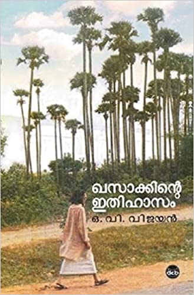

BOOK GALARY
my favorites | language | trending
.jpg)
Daivathinte Charanmar
AutherName : Joseph Annamkutty Jose
Mr. Annamkutty in a way, thanks the daivathinte charanmar of his life through this book. He has created a great impact on many lives (he is one among those charanmar for many of us). More than inspiration or motivation, a ray of positivity is enough to live with hope. Learnt how words can play a major role in our lives. He is the only reason for writing about books, or one of the reasons to even start reading a book.

The Poison of Love
മീരാസാധു
AutherName : K.R. Meera
When Tulsi first meets Madhav, she is irrevocably drawn to his chiselled good looks and charm. Although wary of his many dalliances and the string of broken hearts left in his wake, she is surprised by the intense desire that Madhav arouses in her. And before long, she forsakes her family, her prospective career, her fiancé—all for the love of this inscrutable man. But love can be like poison. meerasadhu

Harry
Potter
AutherName:Book by J. K. Rowling
Harry Potter is a series of seven fantasy novels written by British author J. K. Rowling. The novels chronicle the lives of a young wizard, Harry Potter, and his friends Hermione Granger and Ron Weasley, all of whom are students at Hogwarts School of Witchcraft and Wizardry. The main story arc concerns Harry's conflict with Lord Voldemort, a dark wizard who intends to become immortal, overthrow the wizard

Khasakkinte Itihasam
AutherName:O.V.Vijayan
Khasakkinte Itihasam (transl. The Legend of Khasak or transl. The Saga of Khasak,[1] generally referred to as Khasak in Malayalam literary circles) is the Malayalam debut novel by Indian writer O. V. Vijayan (1930–2005). It was first serialised in 1968 and published as a single edition in 1969.[2][3] The novel has been translated from Malayalam into French by Dominique Vitalyos. The novel tells the story of a young university student,